Your agent asks. Your policy decides. The ledger remembers.

Writ wraps agents; it never asks you to adopt a runtime. The same decision point and the same record apply in every interception mode.
MCP proxy, process wrap, SDK hook — the agent itself is unchanged.
One writ.yaml checked before every call: allow, deny, ask, redact. First match wins; unmatched calls fail closed.
Every call — including denials — lands in a hash-chained ledger, with an OTel GenAI span alongside.
Four verdicts, first match wins. The file lives in your repo, so the policy travels with the code and reviews like code. A denial carries the rule id, the human reason and the line that produced it — the agent can correct itself instead of retrying blind.
# writ.yaml
version: 1
default: ask # fail closed
rules:
- id: block-destructive-shell
when: tool == "bash" and command matches "rm -rf|mkfs|dd if="
verdict: deny
reason: "Destructive system command. Narrow the path and retry."
- id: protect-production-db
when: tool startswith "postgres" and query matches "(?i)(DROP|TRUNCATE)"
verdict: ask
irreversible: true # excluded from automated replay
- id: egress-allowlist
when: tool == "http" and not url.host in hosts.allowed
verdict: deny
- id: mask-pii
when: tool startswith "postgres"
verdict: redact
patterns: ["[A-Za-z0-9._%+-]+@[A-Za-z0-9.-]+\\.[A-Za-z]{2,}"]Logs are what an application chose to write. A ledger is evidence: every call, its verdict, the rule that decided it, who approved it, and the hash of the record before it. Edit one line and writ verify names the record where the chain broke.

writ verify — tamper-evident by construction. Nothing is captured beyond metadata and hashes unless you turn content capture on, and there is no telemetry to opt out of.| writ run -- | wrap an agent process under policy |
| writ proxy --mcp --server | govern every call to an MCP server |
| writ log · writ show | what did my agent actually do last night |
| writ verify | is this ledger still the one that was written |
| writ replay | what would this policy have done to last week's run |
| writ policy test | unit-test rules against recorded fixtures |
| writ doctor | what is governed, and what is blind |
| writ report | one self-contained HTML file to hand to someone else |
Writ governs actions, not reasoning. The threat model is public: docs/THREAT_MODEL.md.
writ doctor says this out loud.